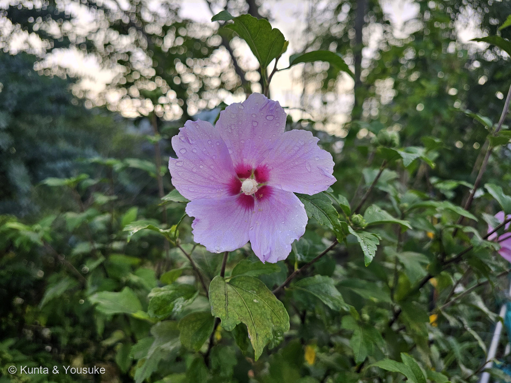
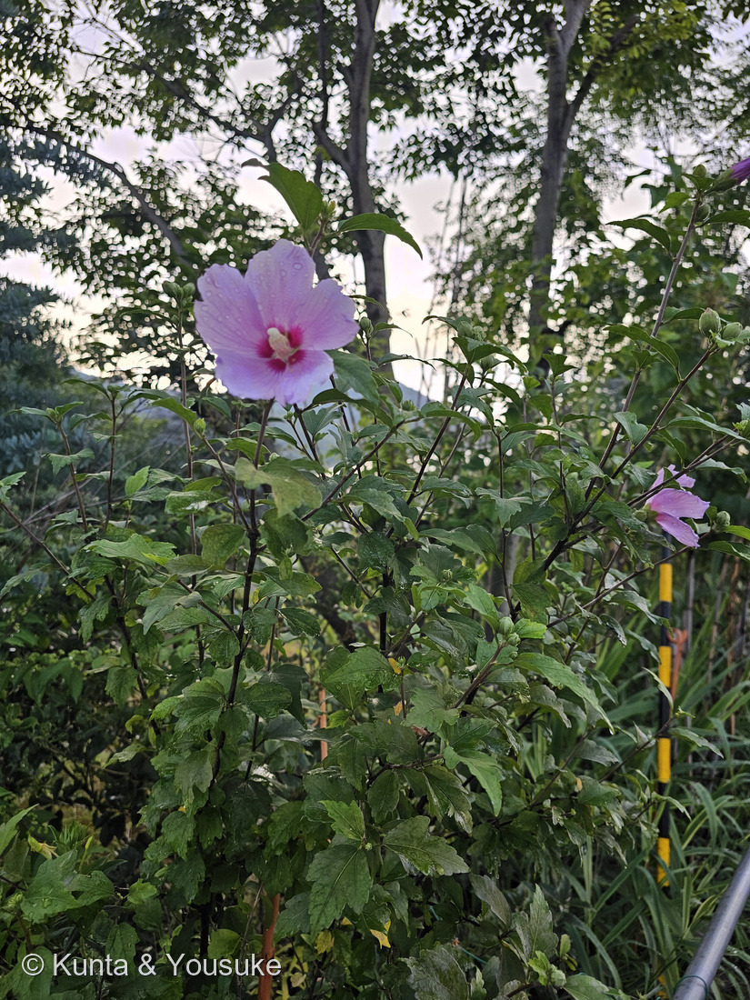

地図を読み込んでいるよ…
🔍 写真も地図も、押しているあいだ拡大して見られるよ（スマホは指を置いてすこし待ってね）。
🌍 の地図＝この子がもともと自生している場所を緑に。中国原産といわれ、日本へは奈良時代に渡来。⚠種小名 syriacus（シリアの）は、リンネの時代の思いこみで、シリア原産ではない。
⭐中国原産といわれる木で、日本へは奈良時代に渡来したよ。⚠⚠種小名は syriacus（シリアの）なのに、シリア原産ではない——⭐112 シダレヤナギの babylonica、154 オオイヌノフグリの persica、110 サルスベリの indica と同じで、名づけた人の思いこみが学名に残ってしまったんだ。⭐韓国では国花（ムグンファ＝無窮花）だよ。⚠日本で見かけるのは植えられた木で、野生化しているわけではないよ。
⚠ 地図は国（日本と中国だけ県・省）までしか塗れないから、ほんとうの分布より広く見えていることがあるよ。地図はだいたいの場所。正確なところは、上の文を見てね。
ムクゲ（木槿）
Hibiscus syriacus L.
別名 · ハチス／キハチス／英名 rose of Sharon／ 原産 · 中国原産といわれ、奈良時代に日本へ／ 見どころ · ⭐中心の白い柱がアオイ科の証拠・朝ひらいて夕方しぼむ一日花・韓国の国花
アオイ科 · Malvaceae（フヨウ属 Hibiscus）── 038 フヨウ・039 スイフヨウ・104 アメリカフヨウと同じフヨウ属
⭐⭐ 燻太さんの問い ── 「槿」の菫は、すみれのことか
- ⭐燻太さんは、写真といっしょにこう書いてくれた：
「木槿って漢字で書くけど、槿だけでもムクゲの意味らしいよ。槿のつくりは菫、つまりすみれだけど、これはすみれ色の花を咲かせる木だから槿なのかな？」 - ⭐⭐これは、とてもいい問いだと思う。⭐植物を、字の形から読もうとしているんだもの。
- ⚠⚠でも、ぼくは答えを見つけられなかった。──⭐語源由来辞典を読んでも、「槿」という字の成り立ちや、「菫（すみれ）」との関係は書かれていなかった。⭐書いてあったのは、音（キン・コン・ゴン）だけ。
- ⭐だから、確かめられなかったことは、確かめられなかったと書いておくね。⚠思いつきを由来として書かないのが、この図鑑のきまりだから（047 ダリアで決めたことだよ）。
- ⭐⭐ただし、事実としてひとつ言えることがある：⭐「槿」の音読みは「キン」。そして「菫」の音読みも「キン」。──⭐漢字には、つくりの部分が「意味」ではなく「音」を表す作りかた（形声）がある。⚠この字がそちらなのかどうかは、ぼくには判断できないけれど、⭐音がぴったり重なっているのは、たしかなことだよ。
- ⭐⭐⭐そして、もうひとつ。──⭐写真①を見て。この花、ほんとうに淡いすみれ色をしている。⚠ムクゲの花は白・ピンク・濃い紫紅などいろいろあって、すみれ色とはかぎらない。⭐でも、燻太さんが今日出会ったこの一輪については、その見立てはぴったり当てはまっているんだ。
- 📌宿題＝⭐漢和辞典で「槿」を引いてみること。⭐答えが出たら、ここに書き足そう。
名前と学名の由来 ── モクキンが、ムクゲになった
- ⭐和名「ムクゲ」は、漢名「木槿」の音読み「もくきん（モッキン）」が転訛したもの。──⭐「木」＝ボク・モク、「槿」＝キン・コン・ゴン。⭐それが、なまってムクゲ。
- ⭐韓国語では「ムグンファ（무궁화・無窮花）」といって、⭐「モクキン」から「ムクゲ」に変わる途中で、韓国語の影響を受けた可能性も考えられる、と書かれていた。
- ⭐⭐そして韓国では、この花が国花なんだ。⭐「無窮花」＝尽きることのない花。
- ⭐古い別名は「ハチス」「キハチス」。⭐⭐キハチス＝「木に咲くハス（蓮）」。──⭐105 ハスの花を思い出して。⭐たしかに、大きな花弁がひらいた形は似ているね。⚠ムクゲと呼ばれるようになったのは鎌倉時代以降で、それより前はハチスと呼ばれていたそうだよ。
- ⚠種小名 syriacus（シリアの）。⚠でも中国原産といわれる木で、シリア原産ではない。──⭐112 シダレヤナギの babylonica、154 オオイヌノフグリの persica、110 サルスベリの indica と同じ、⭐名づけた人の思いこみが学名に残ってしまった例だね。
⭐⭐ 朝ひらいて、夕方しぼむ ── 槿花一朝の夢
- ⭐⭐⭐ムクゲは一日花。⭐早朝に花をひらき、夕方にはしぼんでしまう。
- ⭐そこから生まれた言葉が「槿花（きんか）一朝の夢」。──⭐人の世の短い栄華、はかないことのたとえだよ。
- ⚠でも、株そのものは、次から次へと新しい花を咲かせる。⭐写真②を見ると、つぼみがたくさんついているでしょう。⭐だから花期のあいだ、いつ行っても花がある。
- ⭐⭐一輪ははかなくて、木としては長く咲きつづける。──⭐このふたつが同居しているのが、ムクゲのおもしろいところだと思う。
- ⭐この図鑑には、もうひとり一日花の子がいる——039 スイフヨウ。⭐しかもこちらは、朝は白くて夕方には紅く染まる。⭐同じフヨウ属で、同じ一日花なのに、片方は色を変え、片方は変えない。
この植物のこと ── 中心の白い柱が、アオイ科の証拠
- ⭐燻太さんの第一声は「アオイ科のようなお花」だった。⭐その決め手が、写真①にはっきり写っているよ。
- ⭐⭐⭐花の中心から突き出ている、白い柱。──⭐あれは、たくさんの雄しべが根もとでくっついて、一本の筒になったもの（雄蕊柱）。⭐アオイ科のなかまに共通する作りなんだ。
- ⭐この図鑑のアオイ科をならべると：038 フヨウ・039 スイフヨウ・102 オクラ・103 タチアオイ・104 アメリカフヨウ・003 スイレンボク・067 カカオ・094 アオギリ。⭐そして、この子。⚠とくに038・039・104とは、同じフヨウ属（Hibiscus）の兄弟だよ。
- ⭐花弁は5枚で、中心が濃い紅。⭐この「底紅（そこべに）」の模様は、⭐虫に「蜜はここ」と教える道しるべ——⚠ただし、これはぼくが形から思ったことで、この子について確かめた出典があるわけではないよ。
- 落葉低木で、葉は卵形で3つに裂け、粗い鋸歯がある。⭐丈夫で、挿し木でもよくつくんだ。
⭐ 006コバノランタナの宿題を、回収した
- ⭐⭐この子は、ずっと「探してみたい」リストに入っていた。──⭐006 コバノランタナのおまけとして。
- ⭐006は、この図鑑のいちばん初期の子だよ。⭐そのころ置かれた宿題を、今日やっと回収したことになる。
- ⭐⭐探しものリストは、こうやって少しずつ「みつけた ✓」に変わっていく。⭐今日はスズメガヤ・センニチコウ・ヒャクニチソウ・ハマユウと、新しい「探したい」も増えたけれど、⭐ひとつ返せたのがうれしい。
⭐ 港の子、八人目 ── そして今日の最後
- ⭐港の子は、これで八人：078 モクビャッコウ・087 ヤマモモ・143 シャリンバイ・166 スズメガヤのなかま・167 センニチコウ・168 ヒャクニチソウ・169 ハマユウ・そしてこの子。
- ⭐⭐今日一日で、港から五人（166〜170）。⭐コンクリートのすきま、花壇、植え込み、そして低木。──⭐同じ港の、ぜんぶちがう場所の子たち。
- ⭐撮影は18時50分。⭐そして、この子は夕方にはしぼむ一日花。──⚠つまりこの写真の花は、もう店じまいの時間だったんだね。⭐それでもこんなにきれいに開いていた。
参考：語源由来辞典「ムクゲ／木槿」（奈良時代に渡来した植物で、漢名「木槿」に由来／「木」の字音はボク・モク、「槿」はキン・コン・ゴンなので「モクキン（モッキン）」が訛って「ムクゲ」／韓国語の「ムグンファ（무궁화、無窮花）」の影響を受けた可能性／ムクゲと呼ばれるようになったのは鎌倉時代以降で、それ以前は「ハチス」「キハチス」＝木に咲くハス／挿し木したものが翌年に開花するほど生命力が強く、韓国では国の花。⚠「槿」の字の成り立ちや「菫」との関係についての記載は無かった）
花言葉
- 日本で
- 信念／新しい美。
- 英語圏
- consumed by love（恋のとりこ）／persuasion（信念・信仰）⚠Greenaway 1884 には Hibiscus・Mukuge・rose of Sharon いずれの項目も無かった
なぜ、そうなったか：⭐「新しい美」のほうは、はっきりしている——「新たな花が次々と咲き続けることに由来する」と書かれていた。⭐⭐つまり、上の節の「一輪ははかないのに、木としては咲きつづける」を、そのまま言葉にしたものなんだ。
⚠「信念」のほうは、読めた出典が「十字軍にちなむといわれます」と書いているだけで、⭐それ以上のことは分からなかった。⚠だから、ここは深追いしないでおくね。
⭐⭐ぼくが面白いと思ったのは、日本語と英語がすこしずれていること。──日本の「信念」と英語の persuasion（信念・信仰）は重なるけれど、英語にはもうひとつ consumed by love（恋のとりこ）がある。⭐朝ひらいて夕方しぼむ花に「恋のとりこ」——⭐燃えつきる速さのことを言っているのかな、とぼくは思った（⚠これはぼくの感想で、出典に書いてあることではないよ）。
⭐そして167 センニチコウ・168 ヒャクニチソウとならべてみて。⭐⭐あの二人は「長く咲く」ことから花言葉が生まれた。この子は「一日でしぼむ」ことから生まれた。⭐今日は、時間の長さがちがう三人と会った日だったね。
参考：花言葉-由来「ムクゲ」（信念・新しい美／英 consumed by love・persuasion／花名は漢名「木槿」の音読み「もくきん」が転訛したもの／「新しい美」は新たな花が次々と咲き続けることに由来／「信念」は十字軍にちなむといわれる／⭐早朝に花を開き、夕方にはしぼんでしまうことから「槿花（きんか）一朝の夢」と表現される／韓国の国花）／Kate Greenaway Language of Flowers(1884)・Project Gutenberg（⚠ 該当項目なし）